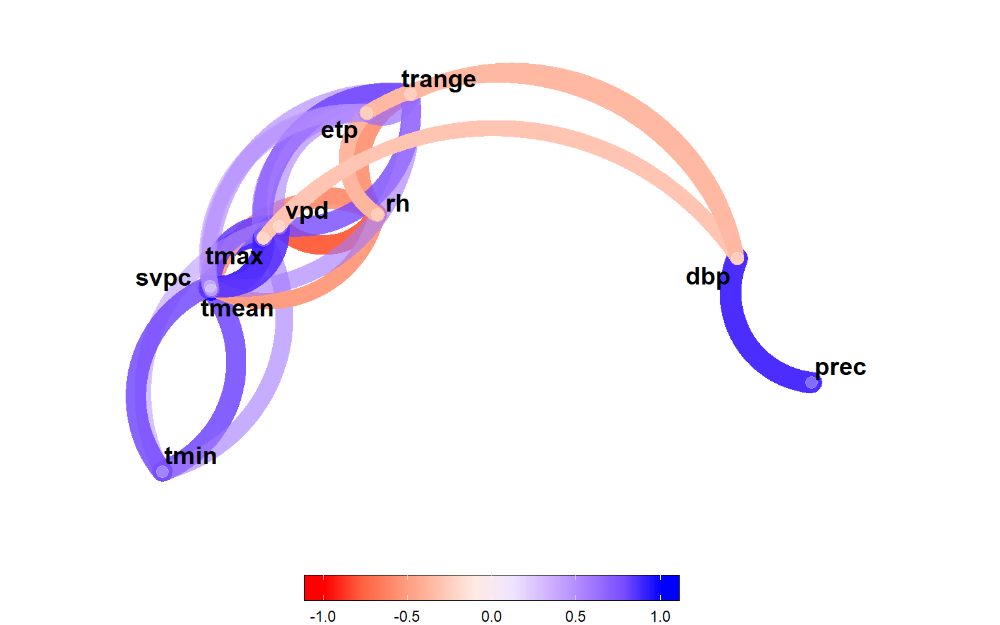

Analysis
1 Libraries
To reproduce the examples of this material, the R packages the following packages are needed.
library(EnvRtype)
library(rio)
library(ggh4x)
library(ggridges)
library(corrr)
library(tidyverse)
library(metan)
my_theme <-
theme_bw() +
theme(panel.spacing = unit(0, "cm"),
panel.grid = element_blank(),
legend.position = "bottom")2 Datasets
2.1 Traits
df_traits <-
import("https://bit.ly/df_barley") |>
as_factor(1:6)2.2 Climate variables
2.2.1 Scripts to gather data
df_env <- import("https://bit.ly/3RvXlgj")
ENV <- df_env$env |> as_character()
LAT <- df_env$Lat
LON <- df_env$Lon
ALT <- df_env$Alt
START <- df_env$Sowing
END <- df_env$Harvesting
# see more at https://github.com/allogamous/EnvRtype
df_climate <-
get_weather(env.id = ENV,
lat = LAT,
lon = LON,
start.day = START,
end.day = END)
# GDD: Growing Degree Day (oC/day)
# FRUE: Effect of temperature on radiation use efficiency (from 0 to 1)
# T2M_RANGE: Daily Temperature Range (oC day)
# SPV: Slope of saturation vapour pressure curve (kPa.Celsius)
# VPD: Vapour pressure deficit (kPa)
# ETP: Potential Evapotranspiration (mm.day)
# PEPT: Deficit by Precipitation (mm.day)
# n: Actual duration of sunshine (hour)
# N: Daylight hours (hour)
# RTA: Extraterrestrial radiation (MJ/m^2/day)
# SRAD: Solar radiation (MJ/m^2/day)
# T2M: Temperature at 2 Meters
# T2M_MAX: Maximum Temperature at 2 Meters
# T2M_MIN: Minimum Temperature at 2 Meters
# PRECTOT: Precipitation
# WS2M: Wind Speed at 2 Meters
# RH2M: Relative Humidity at 2 Meters
# T2MDEW: Dew/Frost Point at 2 Meters
# ALLSKY_SFC_LW_DWN: Downward Thermal Infrared (Longwave) Radiative Flux
# ALLSKY_SFC_SW_DWN: All Sky Insolation Incident on a Horizontal Surface
# ALLSKY_TOA_SW_DWN: Top-of-atmosphere Insolation
# [1] "env" "ETP" "GDD" "PETP" "RH2M" "SPV"
# [8] "T2M" "T2M_MAX" "T2M_MIN" "T2M_RANGE" "T2MDEW" "VPD"
# Compute other parameters
env_data <-
df_climate %>%
as.data.frame() %>%
param_temperature(Tbase1 = 5, # choose the base temperature here
Tbase2 = 28, # choose the base temperature here
merge = TRUE) %>%
param_atmospheric(merge = TRUE) %>%
param_radiation(merge = TRUE)2.2.2 Tidy climate data
env_data <- import("https://bit.ly/env_data_nasapower")
str(env_data)
## 'data.frame': 337 obs. of 19 variables:
## $ env : int 2019 2019 2019 2019 2019 2019 2019 2019 2019 2019 ...
## $ LON : num 30.5 30.5 30.5 30.5 30.5 ...
## $ LAT : num 31.1 31.1 31.1 31.1 31.1 ...
## $ YEAR : int 2019 2019 2019 2019 2019 2019 2019 2019 2019 2019 ...
## $ MM : int 11 11 11 11 11 11 11 11 11 11 ...
## $ DD : int 12 13 14 15 16 17 18 19 20 21 ...
## $ DOY : int 316 317 318 319 320 321 322 323 324 325 ...
## $ YYYYMMDD : chr "12/11/2019" "13/11/2019" "14/11/2019" "15/11/2019" ...
## $ daysFromStart: int 1 2 3 4 5 6 7 8 9 10 ...
## $ tmean : num 24.6 24.4 23.2 22.4 21.4 ...
## $ tmax : num 33.5 32.8 29.9 27.6 26.9 ...
## $ tmin : num 18 17.1 17.9 19.1 17.2 ...
## $ prec : num 0 0 0.05 0.06 0.06 0.01 0 0 0 0 ...
## $ rh : num 49.1 53.8 51.1 60.6 64.4 ...
## $ trange : num 15.52 15.68 11.97 8.45 9.77 ...
## $ vpd : num 2.42 2.11 1.79 1.38 1.17 ...
## $ svpc : num 0.196 0.188 0.178 0.173 0.162 ...
## $ etp : num 6.77 6.58 6.28 6.23 6.09 ...
## $ dbp : num -6.77 -6.58 -6.23 -6.17 -6.03 ...
id_var <- names(env_data)[10:19]3 Scripts
3.1 Correlation analysis of climate variables
env_data |>
select_cols(id_var) |>
correlate() |>
network_plot() +
guides(color = guide_colorbar(barheight = 1,
barwidth = 20,
ticks.colour = "black")) +
theme(legend.position = "bottom")
ggsave("figs/fig1_network.png", width = 4, height = 4)3.2 Distribution of climate variables
# long format for climate data
env_data_d <-
env_data |>
remove_cols(LON:YYYYMMDD, daysFromStart) |>
pivot_longer(-env)
# long format for grain yield
df_gy_dist <-
df_traits |>
select(YEARS, GY) |>
mutate(name = "GY", .after = YEARS) |>
rename(value = GY,
env = YEARS)# bind climate and GY
env_data_d <- rbind(df_gy_dist, env_data_d)
# mean values for each trait
env_data_mean <- means_by(env_data_d, name)
ggplot(env_data_d, aes(x = value, y = env, fill = env)) +
geom_density_ridges(scale = 0.9) +
geom_vline(data = env_data_mean,
aes(xintercept = value),
linetype = 2) +
facet_grid(~name, scales = "free") +
theme(panel.grid.minor = element_blank(),
legend.position = "bottom",
legend.title = element_blank()) +
scale_y_discrete(expand = expansion(c(0, 0.05))) +
labs(x = "Observed value",
y = "Density",
fill = "") +
my_theme
ggsave("figs/fig2_density_climate.png", width = 12, height = 5)3.3 Environmental tipology
names.window <- c('1-initial growing',
'2-Tillering',
'3-Boosting',
'4-Heading/Flowering',
"5-Grain filling",
"6-Physiological maturity")
out <-
env_typing(env.data = env_data,
env.id = "env",
var.id = c("trange", "tmax", "tmin", "dbp", "etp", "vpd"),
by.interval = TRUE,
time.window = c(0, 15, 35, 65, 90, 140),
names.window = names.window)
out2 <-
separate(out,
env.variable,
into = c("var", "freq"),
sep = "_",
extra = "drop")3.3.1 tmax
# plot the distribution of envirotypes for dbp
p1 <-
out2 |>
subset(var == "tmax") |> # change the variable here
ggplot() +
geom_bar(aes(x=Freq, y=interval,fill=freq),
position = "fill",
stat = "identity",
width = 1,
color = "white",
size=.2)+
facet_grid(~env, scales = "free", space = "free")+
scale_y_discrete(expand = c(0,0))+
scale_x_continuous(expand = c(0,0))+
xlab('Relative frequency of the maximum temperature (ºC)')+
ylab("Crop stage")+
labs(fill='Envirotype')+
theme(axis.title = element_text(size=12),
legend.text = element_text(size=9),
strip.text = element_text(size=12),
legend.title = element_text(size=12),
strip.background = element_rect(fill="gray95",size=1),
legend.position = 'bottom')3.3.2 vpd
# plot the distribution of envirotypes for dbp
p2 <-
out2 |>
subset(var == "vpd") |> # change the variable here
ggplot() +
geom_bar(aes(x=Freq, y=interval,fill=freq),
position = "fill",
stat = "identity",
width = 1,
color = "white",
size=.2)+
facet_grid(~env, scales = "free", space = "free")+
scale_y_discrete(expand = c(0,0))+
scale_x_continuous(expand = c(0,0))+
xlab(expression(Relative~frequency~of~the~vapor~pressure~deficit~~(KPa~day^{-1})))+
ylab("Environment")+
labs(fill='Envirotype')+
theme(axis.title = element_text(size=12),
legend.text = element_text(size=9),
strip.text = element_text(size=12),
legend.title = element_text(size=12),
strip.background = element_rect(fill="gray95",size=1),
legend.position = 'bottom')3.3.3 dbp
# plot the distribution of envirotypes for dbp
p3 <-
out2 |>
subset(var == "dbp") |> # change the variable here
ggplot() +
geom_bar(aes(x=Freq, y=interval,fill=freq),
position = "fill",
stat = "identity",
width = 1,
color = "white",
size=.2)+
facet_grid(~env, scales = "free", space = "free")+
scale_y_discrete(expand = c(0,0))+
scale_x_continuous(expand = c(0,0))+
xlab(expression(Relative~frequency~of~the~rainfall~deficit~~(mm~day^{-1})))+
ylab("Environment")+
labs(fill='Envirotype')+
theme(axis.title = element_text(size=12),
legend.text = element_text(size=9),
strip.text = element_text(size=12),
legend.title = element_text(size=12),
strip.background = element_rect(fill="gray95",size=1),
legend.position = 'bottom')
arrange_ggplot(p1, p2, p3,
ncol = 1,
tag_levels = "a")
Figure 3.1: Quantiles for maximum temperature (a), vapor pressure deficit (b), and deficit by precipitation (c) across distinct crop stages of barley growing in two crop seasons.
ggsave("figs/fig3_typology.png", width = 10, height = 9)4 Joint analysis
4.1 Model
mod <-
gamem_met(df_traits,
env = ENV,
gen = GENOTYPES,
rep = REP,
block = IBLOCK,
resp = CAN:GY)
## Evaluating trait CAN |======= | 17% 00:00:23
Evaluating trait NDF |============== | 33% 00:00:46
Evaluating trait PH |====================== | 50% 00:01:10
Evaluating trait CH |============================= | 67% 00:01:33
Evaluating trait GFD |==================================== | 83% 00:01:56
Evaluating trait GY |============================================| 100% 00:02:19
## ---------------------------------------------------------------------------
## P-values for Likelihood Ratio Test of the analyzed traits
## ---------------------------------------------------------------------------
## model CAN NDF PH CH GFD GY
## COMPLETE NA NA NA NA NA NA
## GEN 3.78e-03 5.08e-31 5.77e-97 5.23e-67 1.56e-08 6.75e-73
## BLOCK(ENV:REP) 4.21e-02 4.46e-01 1.49e-03 1.00e+00 5.30e-02 1.00e+00
## GEN:ENV 3.58e-203 5.85e-263 3.81e-142 1.34e-128 1.97e-169 1.06e-240
## ---------------------------------------------------------------------------
## All variables with significant (p < 0.05) genotype-vs-environment interaction4.2 LRT
lrt <- gmd(mod, "lrt")
lrt4.3 Variance components
vcomp <- gmd(mod, "vcomp")
vcomp
plot(mod, type = "vcomp")
ggsave("figs/fig4_vcomp.png", width = 8, height = 7)5 MGIDI appied to each environment
5.1 Model
mod_env <-
gamem(df_traits,
gen = GENOTYPES,
rep = REP,
block = IBLOCK,
resp = CAN:GY,
by = ENV)
## Evaluating trait CAN |======= | 17% 00:00:00
Evaluating trait NDF |============== | 33% 00:00:01
Evaluating trait PH |====================== | 50% 00:00:01
Evaluating trait CH |============================= | 67% 00:00:02
Evaluating trait GFD |==================================== | 83% 00:00:02
Evaluating trait GY |============================================| 100% 00:00:03
## ---------------------------------------------------------------------------
## P-values for Likelihood Ratio Test of the analyzed traits
## ---------------------------------------------------------------------------
## model CAN NDF PH CH GFD GY
## Complete NA NA NA NA NA NA
## Genotype 2.04e-76 1.39e-119 8.70e-98 8.23e-60 8.85e-72 6.25e-116
## rep:block 9.99e-01 1.00e+00 1.43e-01 1.00e+00 1.01e-02 1.00e+00
## ---------------------------------------------------------------------------
## All variables with significant (p < 0.05) genotype effect
## Evaluating trait CAN |======= | 17% 00:00:00
Evaluating trait NDF |============== | 33% 00:00:01
Evaluating trait PH |====================== | 50% 00:00:01
Evaluating trait CH |============================= | 67% 00:00:02
Evaluating trait GFD |==================================== | 83% 00:00:02
Evaluating trait GY |============================================| 100% 00:00:03
## ---------------------------------------------------------------------------
## P-values for Likelihood Ratio Test of the analyzed traits
## ---------------------------------------------------------------------------
## model CAN NDF PH CH GFD GY
## Complete NA NA NA NA NA NA
## Genotype 5.88e-47 3.38e-87 4.54e-80 6.36e-85 8.65e-58 1.92e-115
## rep:block 7.96e-01 7.22e-01 3.52e-01 1.00e+00 7.82e-01 1.00e+00
## ---------------------------------------------------------------------------
## All variables with significant (p < 0.05) genotype effect
## Evaluating trait CAN |======= | 17% 00:00:00
Evaluating trait NDF |============== | 33% 00:00:01
Evaluating trait PH |====================== | 50% 00:00:01
Evaluating trait CH |============================= | 67% 00:00:02
Evaluating trait GFD |==================================== | 83% 00:00:02
Evaluating trait GY |============================================| 100% 00:00:03
## ---------------------------------------------------------------------------
## P-values for Likelihood Ratio Test of the analyzed traits
## ---------------------------------------------------------------------------
## model CAN NDF PH CH GFD GY
## Complete NA NA NA NA NA NA
## Genotype 1.56e-53 3.44e-76 2.75e-53 1.89e-46 1.71e-31 1.35e-81
## rep:block 3.86e-02 1.75e-01 1.58e-03 1.51e-01 1.00e+00 4.67e-01
## ---------------------------------------------------------------------------
## All variables with significant (p < 0.05) genotype effect
## Evaluating trait CAN |======= | 17% 00:00:00
Evaluating trait NDF |============== | 33% 00:00:01
Evaluating trait PH |====================== | 50% 00:00:01
Evaluating trait CH |============================= | 67% 00:00:02
Evaluating trait GFD |==================================== | 83% 00:00:02
Evaluating trait GY |============================================| 100% 00:00:03
## ---------------------------------------------------------------------------
## P-values for Likelihood Ratio Test of the analyzed traits
## ---------------------------------------------------------------------------
## model CAN NDF PH CH GFD GY
## Complete NA NA NA NA NA NA
## Genotype 6.53e-65 1.98e-76 6.43e-78 1.96e-70 6.52e-31 7.35e-80
## rep:block 3.41e-01 7.17e-01 1.35e-01 1.00e+00 1.00e+00 1.00e+00
## ---------------------------------------------------------------------------
## All variables with significant (p < 0.05) genotype effect5.2 correlation between traits
df_traits |>
select_numeric_cols() |>
correlate() |>
network_plot() +
guides(color = guide_colorbar(barheight = 1,
barwidth = 20,
ticks.colour = "black")) +
theme(legend.position = "bottom")
ggsave("figs/fig5_network_traits.png", width = 4, height = 4)5.3 MGIDI index
mgidi_di <-
mgidi(mod_env,
ideotype = c("l, l, h, h, h, h"),
weights = c(1,1,2,1,1,5), # remove to consider equal heigths
SI = 5,
verbose = FALSE)5.4 Selected genotypes
5.4.1 Veen plot
sels <- sel_gen(mgidi_di) |> split_factors(ENV)
sel_2019DI <- sels$`2019DI`$data
sel_2019FI <- sels$`2019FI`$data
sel_2020DI <- sels$`2020DI`$data
sel_2020FI <- sels$`2020FI`$data
v1 <-
venn_plot(sel_2019DI, sel_2020DI,
sel_2019FI, sel_2020FI,
names = c("2019DI", "2020DI", "2019FI", "2020FI"))
# Selected in DI
DI <- set_union(sel_2019DI, sel_2020DI)
# Selected in FI
FI <- set_union(sel_2019FI, sel_2020FI)
v2 <- venn_plot(DI, FI)
arrange_ggplot(v1, v2,
tag_levels = "a")
ggsave("figs/fig6_venn.png", width = 12, height = 5)
# only in DI (23)
set_difference(DI, FI)
## [1] "08AB_09" "08BA_82" "06MT_91" "07UT_46" "06WA_38" "09AB_10" "09BA_21"
## [8] "08WA_28" "08BA_95" "08MT_15" "08MT_63" "08AB_46" "06WA_53" "08MT_77"
## [15] "07WA_03" "09AB_82" "08N2_66" "09AB_66" "09N2_74" "07UT_55" "06WA_63"
## [22] "07UT_14" "08MT_44"
# only in FI (18)
set_difference(FI, DI)
## [1] "09AB_89" "07AB_66" "08MT_68" "07AB_77" "07UT_94" "09BA_68" "07MT_43"
## [8] "06MT_46" "06AB_15" "09MT_16" "09WA_19" "08UT_79" "08N6_90" "09AB_94"
## [15] "06N2_39" "09AB_78" "07UT_93" "08MT_10"
# in all environments
set_intersect(sel_2019DI, sel_2020DI, sel_2019FI, sel_2020FI)
## [1] "09UT_24"5.4.2 MGIDI index for the selected genotypes
df_mgidi <-
gmd(mgidi_di, "MGIDI") |>
mutate(selected = ifelse(Genotype %in% set_union(sel_2019DI, sel_2020DI,
sel_2019FI, sel_2020FI),
"Yes",
"No")) |>
subset(selected == "Yes")
m1 <-
ggplot(df_mgidi |> subset(ENV == "2019DI"),
aes(x = MGIDI, y = reorder(Genotype, -MGIDI))) +
geom_line(aes(group = 1)) +
geom_point(size = 2.5) +
labs(x = "Multi-trait Genotype-Ideotype Distance Index",
y = "Genotypes") +
my_theme
m2 <-
ggplot(df_mgidi |> subset(ENV == "2020DI"),
aes(x = MGIDI, y = reorder(Genotype, -MGIDI))) +
geom_line(aes(group = 1)) +
geom_point(size = 2.5) +
labs(x = "Multi-trait Genotype-Ideotype Distance Index",
y = "Genotypes") +
my_theme
m3 <-
ggplot(df_mgidi |> subset(ENV == "2019FI"),
aes(x = MGIDI, y = reorder(Genotype, -MGIDI))) +
geom_line(aes(group = 1)) +
geom_point(size = 2.5) +
labs(x = "Multi-trait Genotype-Ideotype Distance Index",
y = "Genotypes") +
my_theme
m4 <-
ggplot(df_mgidi |> subset(ENV == "2020FI"),
aes(x = MGIDI, y = reorder(Genotype, -MGIDI))) +
geom_line(aes(group = 1)) +
geom_point(size = 2.5) +
labs(x = "Multi-trait Genotype-Ideotype Distance Index",
y = "Genotypes") +
my_theme
arrange_ggplot(m1, m2, m3, m4,
ncol = 4,
tag_levels = "a")
Figure 5.1: Selected genotypes ranked by the MGIDI in the environments 2019DI (a), 2020DI (b), 2019FI (c), and 2020FI (d)
ggsave("figs/fig7_selected.png", width = 17, height = 8)5.5 Selection gains
sel_gain <-
gmd(mgidi_di) |>
mutate(YEAR = extract_number(ENV),
STRESS = extract_string(ENV)) |>
mutate(STRESS = ifelse(STRESS == "DI",
"Deficit irrigation",
"Full irrigation")) |>
mutate(negative = ifelse(SDperc <= 0, "Negative", "Positive"))
library(ggh4x)
ggplot(sel_gain, aes(VAR, SGperc)) +
geom_hline(yintercept = 0, size = 0.2) +
geom_col(aes(fill = negative),
col = "black",
size = 0.2) +
scale_y_continuous(expand = expansion(mult = 0.1)) +
facet_nested(~YEAR + STRESS +sense, scales = "free", space = "free") +
geom_text(aes(label = round(SDperc, 2),
hjust = ifelse(SDperc > 0, -0.1, 1.1),
angle = 90),
size = 3) +
labs(x = "Traits",
y = "Selection gains (%)") +
my_theme +
theme(legend.position = "bottom",
legend.title = element_blank(),
panel.grid.minor = element_blank(),
strip.background = element_rect(color = "black",
fill = "white"))
ggsave("figs/fig8_selection_gains.png", width = 12, height = 6)6 Section info
sessionInfo()
## R version 4.2.0 (2022-04-22 ucrt)
## Platform: x86_64-w64-mingw32/x64 (64-bit)
## Running under: Windows 10 x64 (build 22000)
##
## Matrix products: default
##
## locale:
## [1] LC_COLLATE=Portuguese_Brazil.utf8 LC_CTYPE=Portuguese_Brazil.utf8
## [3] LC_MONETARY=Portuguese_Brazil.utf8 LC_NUMERIC=C
## [5] LC_TIME=Portuguese_Brazil.utf8
##
## attached base packages:
## [1] stats graphics grDevices utils datasets methods base
##
## other attached packages:
## [1] metan_1.17.0 forcats_0.5.1 stringr_1.4.0 dplyr_1.0.9
## [5] purrr_0.3.4 readr_2.1.2 tidyr_1.2.0 tibble_3.1.7
## [9] tidyverse_1.3.1 corrr_0.4.3 ggridges_0.5.3 ggh4x_0.2.1
## [13] ggplot2_3.3.6 rio_0.5.29 EnvRtype_1.1.0
##
## loaded via a namespace (and not attached):
## [1] nlme_3.1-157 fs_1.5.2 lubridate_1.8.0
## [4] RColorBrewer_1.1-3 httr_1.4.3 numDeriv_2016.8-1.1
## [7] tools_4.2.0 backports_1.4.1 bslib_0.3.1
## [10] utf8_1.2.2 R6_2.5.1 DBI_1.1.3
## [13] colorspace_2.0-3 withr_2.5.0 tidyselect_1.1.2
## [16] GGally_2.1.2 curl_4.3.2 compiler_4.2.0
## [19] textshaping_0.3.6 cli_3.3.0 rvest_1.0.2
## [22] xml2_1.3.3 labeling_0.4.2 bookdown_0.27
## [25] sass_0.4.1 scales_1.2.0 systemfonts_1.0.4
## [28] digest_0.6.29 minqa_1.2.4 foreign_0.8-82
## [31] rmarkdown_2.14 pkgconfig_2.0.3 htmltools_0.5.2
## [34] lme4_1.1-30 highr_0.9 dbplyr_2.2.1
## [37] fastmap_1.1.0 rlang_1.0.3 readxl_1.4.0
## [40] rstudioapi_0.13 jquerylib_0.1.4 generics_0.1.3
## [43] farver_2.1.1 jsonlite_1.8.0 zip_2.2.0
## [46] magrittr_2.0.3 Matrix_1.4-1 patchwork_1.1.1
## [49] Rcpp_1.0.8.3 munsell_0.5.0 fansi_1.0.3
## [52] lifecycle_1.0.1 stringi_1.7.6 yaml_2.3.5
## [55] mathjaxr_1.6-0 MASS_7.3-57 plyr_1.8.7
## [58] grid_4.2.0 ggrepel_0.9.1 crayon_1.5.1
## [61] lattice_0.20-45 haven_2.5.0 splines_4.2.0
## [64] hms_1.1.1 knitr_1.39 pillar_1.7.0
## [67] boot_1.3-28 reshape2_1.4.4 codetools_0.2-18
## [70] reprex_2.0.1 glue_1.6.2 evaluate_0.15
## [73] data.table_1.14.2 modelr_0.1.8 foreach_1.5.2
## [76] nloptr_2.0.3 vctrs_0.4.1 rmdformats_1.0.4
## [79] tzdb_0.3.0 tweenr_1.0.2 cellranger_1.1.0
## [82] gtable_0.3.0 polyclip_1.10-0 reshape_0.8.9
## [85] assertthat_0.2.1 xfun_0.31 ggforce_0.3.3
## [88] openxlsx_4.2.5 broom_1.0.0 ragg_1.2.2
## [91] iterators_1.0.14 lmerTest_3.1-3 ellipsis_0.3.2